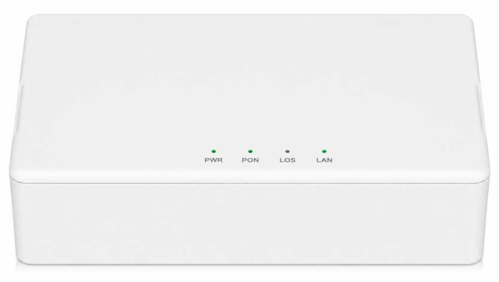
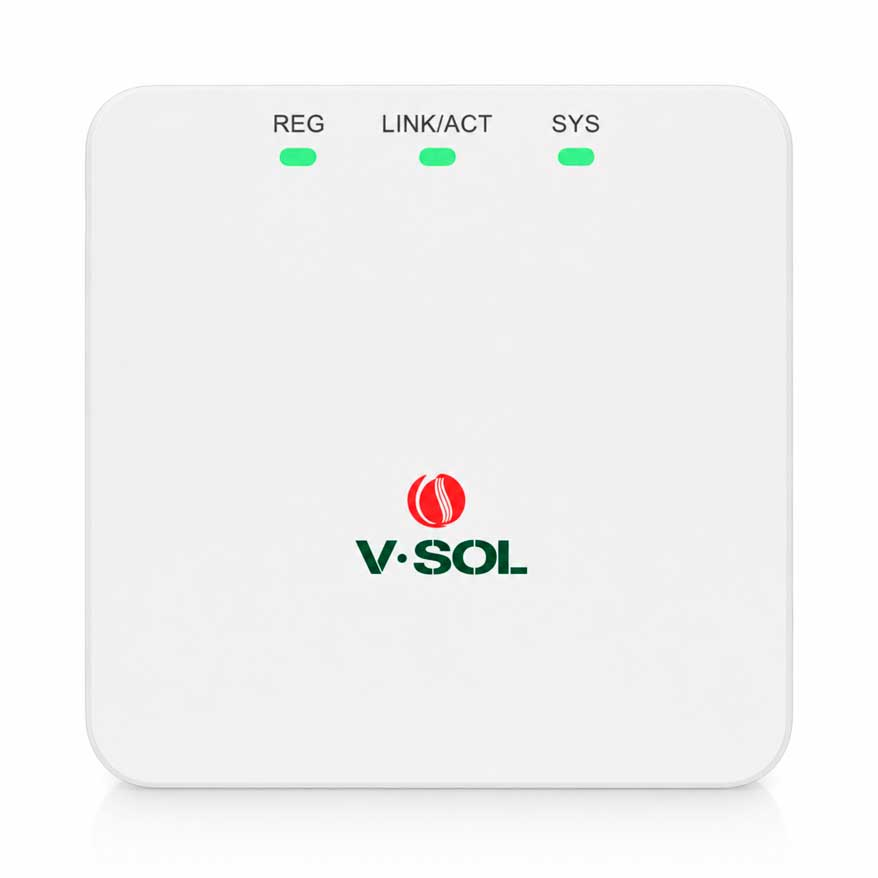
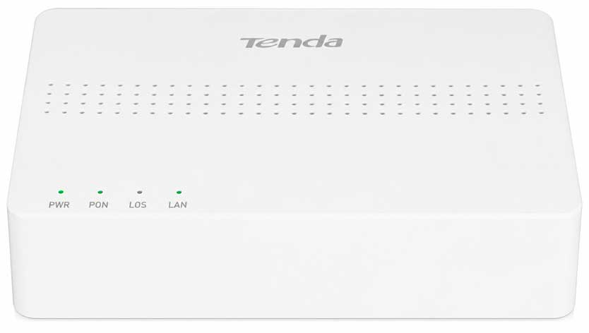

Пропал интернет? Разберёмся за 2 минуты
У вас дома установлен оптический терминал (ONU) — от него кабель напрямую идёт к Wi-Fi роутеру. Почти всегда причину проблемы можно понять по индикаторам на терминале. Ответьте на пару вопросов ниже — и узнаете, что произошло и что делать дальше.
Найдите свой терминал и посмотрите на индикаторы
У разных абонентов установлены разные модели — но принцип у всех одинаковый. Сверьте, что видите на своём терминале, с картинками ниже.

BDCOM P1501DT
Индикаторы: PWR, PON, LOS, LAN. При проблеме с оптическим сигналом моргает оранжевый индикатор LOS или бесконечно моргает зеленый индикатор PON.

V-SOL V2801RE
Индикаторы: SYS, LINK/ACT, REG. Здесь один индикатор REG отвечает и за сигнал, и за регистрацию на сервере.

Tenda HG1
Те же индикаторы, что и у первого типа: PWR, PON, LOS, LAN. Логика чтения полностью совпадает — просто другой корпус.
Ответьте на пару вопросов
Что можно проверить в любой ситуации
🔌 Перезагрузка
Отключите блоки питания терминала и роутера из розетки на 30 секунд. Часто это решает проблему само по себе.
🔀 WAN, а не LAN
Кабель от терминала подключается только в порт WAN / Internet роутера. В LAN-порт подключать нельзя — сессия привязана к MAC-адресу.
📉 Массовые проблемы
Прежде чем писать нам, загляните в канал с авариями — возможно, проблема уже известна и устраняется.
📢 Канал с авариями